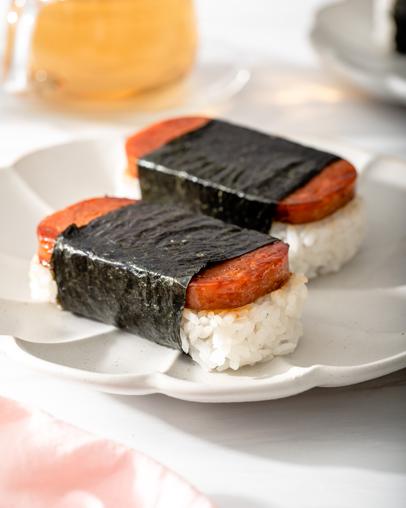

SPAM® Musubi
Say “aloha” to SPAM® Musubi. This Hawaiian take on surf and turf is sure to be a hit at your next luau! Your taste buds will be so pleased by the delicious flavor that they’ll throw on a Lei and start dancing the hula.
INGREDIENTS
- 2 slices SPAM® Classic – sliced 3/8
- 3 ounces cooked white rice, seasoned with furikake and toasted sesame seeds, if desired
- 1 tablespoon HOUSE OF TSANG® Hibatchi Grill Sweet Ginger Sesame Sauce or HOUSE OF TSANG® General Tso Sauce
- 1 whole sheet nori
DIRECTIONS
- In large skillet, cook SPAM® Classic until lightly browned and crisp. Drizzle with grill sauce or cooking sauce.
- Place rice into musubi press or line inside of empty SPAM® Classic can with plastic wrap and place rice in can. Press rice down firmly.
- Sprinkle with seasoned furikake and toasted sesame seeds, if desired.
- Place SPAM® Classic on rice in press or in can. Press down firmly. Optional: top with remaining rice; press down.
- Remove SPAM® Classic and rice from musubi press or can.
- On work surface, cut nori to desired width.
- Lay nori shiny-side-down; top with pressed SPAM® Classic and rice. Wrap nori around pressed SPAM® Classic and rice. Serve immediately.